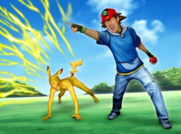

Pokemaniaco
 De: La Frikipedia, la enciclopedia extremadamente seria.
De: La Frikipedia, la enciclopedia extremadamente seria.

|
ATENCIÓN
El autor de este artículo pide una ayudita. Porque es más triste de robar que de pedir. Se le han terminado las ideas y pide de rodillas a los frikipedistas (más listos, inteligentes y guapos que él) que le ayuden a terminar o mejorar su obra.
|
| De la serie tribus urbanas del mundo:
|
| Pokemaniaco
|
Ejemplo de la tribu

|
Pokemaniaco deseando una vagina pokemon
|
|
| Hábitat
|
Principalmente en foros y salones de juego
|
| Inteligencia
|
Extrema, lo creas o no
|
| Frase favorita
|
Me da igual lo que digan de mi madre pero a mi Charmander ni llamarla salamandra
|
| ¿Peligroso?
|
Más que un yonki con el mono
|
| Obsesión
|
Capturarlos a todos
|
| Notas
|
El 95% de los Pokemaniacos odian el anime de Pokemon
|
Este artículo trata sobre los yonkis del videojuego. Para la mezcla de pijos-emos, véase Pokemon (tribu urbana).
 Lo que seria en la vida real!
Sueño erotico de un Pokemaniaco.
Los pokemaniacos son personas frikis normales que matan por pokemon (en serio) ellos son una subrrama entre otakus y frikis. Estos siempre están viendo pokemon y cren que algun dia un cientifico gay que tambien es pokemaniaco normal creara un pikachu de verdad (esta gente esta medio tarada) en fin estos frikiotakus desearían que sean recocidos entre otakus y frikis como otro grupo mas estos defienden a pokeballs y pokemons capa y espada todo aquello que tenga que ver con pokemon desde su serie tonta y repetitiva hasta los videojuegos que es lo unico bueno que han sacado
Historia
Estos surgieron con el juego de pokemon que de alguna manera le lavó a los chicos el saco de aire cerebro dejándolos solo con el nombre de los 151 pokemons que salieron en esa versión que luego se convirtieron en 300 luego 450 luego en 124321354543445343243 y así sucesivamente. Esta fue la primera etapa pero a Satoshi gayjiri (el creador de pokemon que al crearlo era un chico gay y con problemas de drogas que lo hacían imaginar que había ratas electrificadas,rocas vivientes,peces gigantes etc un chico guay y cool) se le ocurrió crear pokemon anime que con su lema diarreico pero ingenioso llamado violalos a todos ya atrápalos a todos ya que entró en la cabeza de los chicos y mato todas las pocas neuronas que les quedavan revolucionó a los pokemaniacos haciendo que se volvieran más violentos hacia las personas que se burlaban de su preciado anime (aunque ahora todos lo critican).
Como reconocerlos
- 1 para reconocerlos de forma fácil en un centro urbano grita a los cuatro vientos Pokemon es una Mierdaaa!! los que te miren feo con ganas de matarte desfavorablemente para ti son pokemaniacos (nota: huye o moriras
violado por pokemaniacos)
- 2 todo el que lea esto asta el final tambien lo es
- 3 siempre que veas a unos chicos con pinta de
gays guays discutiendo de forma muy seria de que pokemon es mejor,que capitulo del manga o anime es mejor.... ellos tambien son pokemaniacos
- 4 si vas a una tienda de videojuegos y ves a dos chicos peleando como
gays tarados Chuck Norris por el ultimo juego de pokemon en la tienda llegando al extremo de acabar con la tienda... si son pokemaniacos
- 5 vas a una tienda de ropa y lo primero que ves en a un tio
con cara de violador normal preguntando que donde habian franelas con la cara de pikachu segundos despues ves que esta destrozando la tienda porque no hay nada.... el tipico pokemaniaco violento.
Cómo se califican los pokemaniacos
- (principiantes): todos aquellos que ya han jugado el juego, visto el anime(pero todavía son muy novatos, cuando mucho se sabrán 80 pokemons pe memoria y desconocen que existe un manga de pokemon) no son muy violentos.
- (normales): todos ellos estan cada día de su vida en el computador viendo
porno cómo ser mejores en el juego, capítulos, manga etc. Estos tienen por lo menos 6 pokemons en nivel 100 y han completado todos los juegos, tambien les remuerde la conciencia cada ves que sale un juego nuevo y no pueden comprarlo inmediatamente, estos son mucho más violentos (despues de llegar aquí no hay paso atrás).
- (superpokemaniacos): estos están en una lista mas reducida ya que se nesecita mucho tiempo para poder ser de este tipo, primero tienen uno y cada uno de los juegos de
putomon pokemon, ven las 24h del día los diarreicos,vomitivos,repugnantes buenos capítulos del anime de pokemon, se saben de memoria los 1435274635364 pokemons además de su peso, grito, pisada y otras chorradas más, la mayoría de estos casi muere de un infarto cuando se enteraron del terremoto de japon y creyeron que su dios Satoshi gayjiri había muerto y el día que se dijo que estaba a salvo todos ellos pasaron las 24h del día cantando el opening de pokemon en celebración por su dios, estos son extremadamente peligrosos ya que son capases de violar,matar,mutilar personas que se metan con sus pokecreencias.
- (reypokemaniacos): estos son todos creadores de una página,blog,reseña que tenga que ver de algún modo con pokemon, se lo toman muy en serio, hacen cosplay disfrazado de cada uno de los 1542335653 pokemons, a sus cuartos no les cabe un afiche más, estos no descansarán nunca hasta
violarlos todos atraparlos todos estos mandan a los demas pokemaniacos, ya que se ganaron su respeto, al haberse visto toda la serie hasta el capítulo que sacan cada día y el manga hasta que sus ojos no pueden más, son los más peligrosos ya que mandan a los demás a hacer sus obscuros planes de violar conquistar el mundo y crear pokemones de verdad.
¿Sabías que...
...Su sueño es hacerse con todos?
...Tienen más Ki que Yamcha?
...Si los maniacos están en un manicomio, los pokemaniacos residen en una granja de toxicomanos pokeria?
...El día en que uno de ellos se haga con todos será considerado un dios por el resto?
...Mientras tanto su dios será Satoshi Tajiri?
| Tribus Urbanas
|
 Universales Universales
 Españolas Españolas
 Argentinas Argentinas
 Chilenas Chilenas
 Colombianas Colombianas
 Mexicanas Mexicanas
 Peruanas Peruanas
 Venezolanas Venezolanas
|
Autor(es):
- Fordus
- Likan003
- Sir Lancebot
- Empoleon
- Reader pkmn
- Jidef
- Marco Salani
- Julian1515
Frikipedia 2005-2016, Licencia
GFDL 1.2 - Extraído por FrikiLeaks